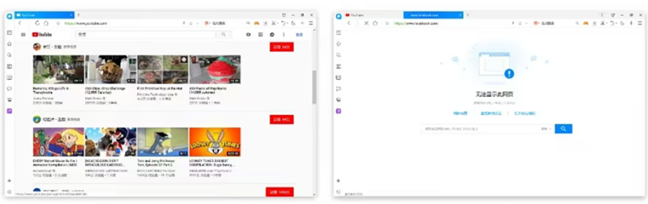
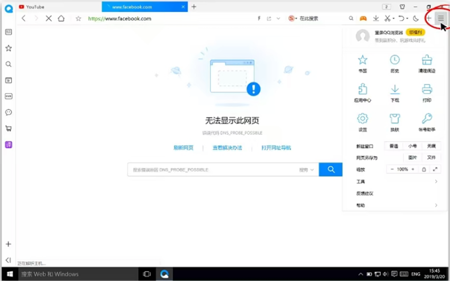
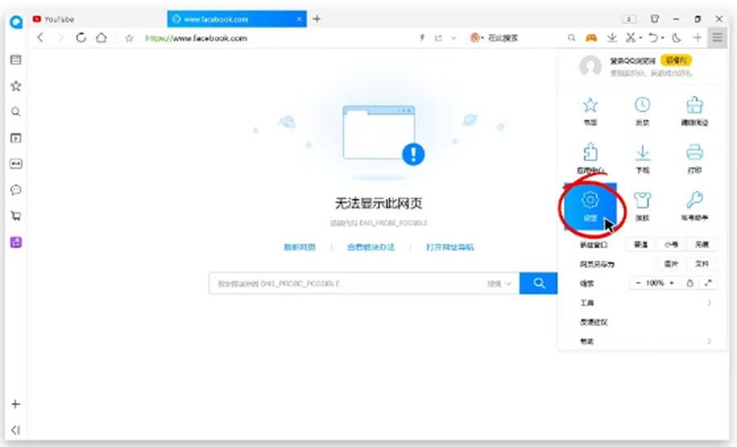
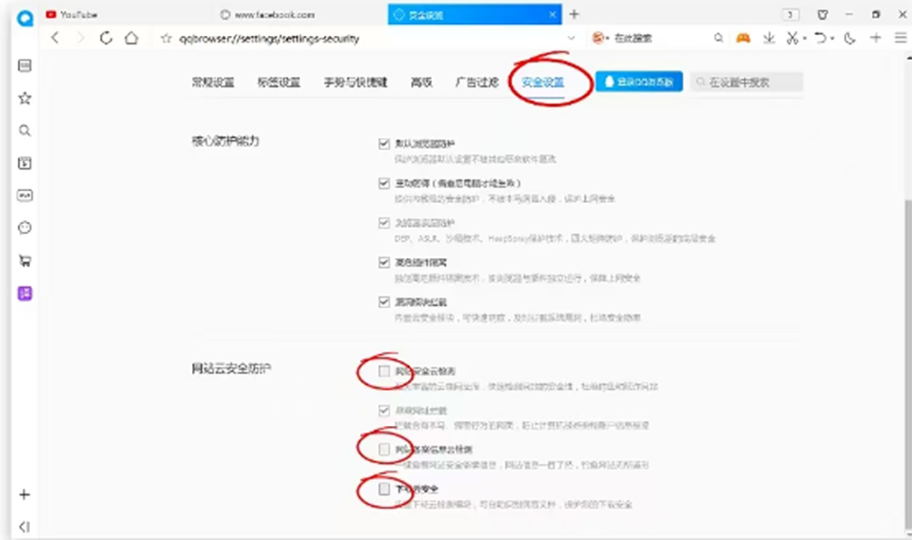

返回
欢迎查看常见问题
智慧服务，让您使用更简单

QQ 浏览器无法打开被墙网站
若您使用 QQ 浏览器，很多境外网站都无法打开可以阅读本文章解决这个问题
如果您使用的是QQ浏览器，在防火墙设置成功之后，在QQ浏览器中有一些网站无法打开，例如Youtube 可以打开但 Facebook 无法打开的情况，或者其他的一部分能看一部分不能看的现象。如下图所示

您可以通过修改QQ浏览器设置中的某些选项来解决这个问题
具体操作步骤如下：
1、点击QQ浏览器右上方三横线图标进入菜单栏

此教程以10.4版本的QQ浏览器为例，不同版本中三横线图标显示位置可能有所不同，具体步骤相同。
2、点击设置图标

3、选择安全设置栏取消勾选x站安全云检测”,“网站备案信息云检测”,“下载云检测”三个选项

取消勾选完成后，即可自动生效
这时您再重新访问下您刚才无法打开的网站，应该就已经可以正常访问了!我们还是建议用户使用 Google Chrome 浏览器配合 赛盾VPN 使用，不会存在类似 QQ 浏览器这种有点莫名其妙的干扰问题。
注:若您在下载和使用过程中有任何问题，您随时可以发送邮件给 {{kfEmail}}，将由专业的客户服务人员帮助您获取到最新版本的软件。